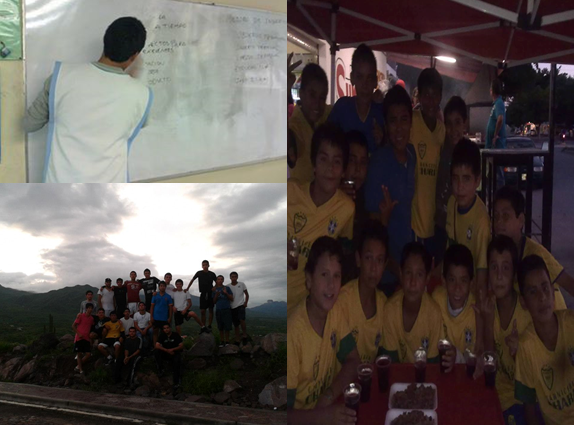

PREPARATORIA |
|
historia de la preparatoria
Inicio
|
En el transcurso de la preparatoria tuve un viaje a álamos sonora con un equipo de futbol, con el cual ganamos algunos partidos que nos clasificaron a semifinales, pero desgraciadamente perdimos la semifinal, en mis tiempos en la prepa fue cuando conseguí mi primer trabajo en una maquiladora llamada Contec, fui con varios de mi salón, la primera semana fue capacitación, nos enseñaban los tipos de cables, medidas de seguridad y exámenes matemáticos y de esas cosas por el estilo, me la pase muy bien trabajando hay y aunque no pagaban muy bien, conmigo fueron 3 de mi salón, los 4 empezamos trabajando, pero a la semana uno se salió y a las dos semanas corrieron a otro, hasta lo vocearon porque había cometido un error, eso fue en unas vacaciones que tuve, porque el horario no era nada agradable, de 7 de la mañana a 5 de la tarde y el camión pasaba por nosotros a las 6, ósea que más o menos me levantaba a las 5:30 pero lo bueno del trabajo es que era de lunes a viernes solamente.
En ese año también asistí a mi primera pascua, conocí a mucha gente que hasta ahorita siguen siendo mis amigos, me la pase muy bien, porque había actividades comidas y al final hubo un convivio, pero lo más es que yo salí en la representación del viacrucis y de algunas escenas de la vida de dios, al principio era un apóstol llamado pedro, pero en el viacrucis era un ladrón, iba caminando descalzo y los que iban representando a los solados nos venían pegando, no sé qué hice para estar ahí pero lo bueno que ya paso y no, no vuelvo a hacerlo.
Al final de la prepa para hacer mi servicio lo hice con un amigo que era encargado del deporte en Ahome, el me dio unas cartulinas para pegarlas en zonas cercanas para que se acercaran y entrenar futbol con esos niños, el primer día llegaron cerca de 20 o 25 niños, si entrenaba muy bien con ellos , me hacían caso y todo, me sentía importante frente a ellos, pero lo mejor fue que en esos días abrieron una convocatoria para un torneo uruguayo en mi fraccionamiento y fui viendo a los niños más buenos para hacer un equipo competitivo en el torneo, tuvimos un amistoso y le pedí a los niños que quisieran venir y hay fui viendo cómo se desempeñaban en cada posición, ese amistoso lo empatamos, pero yo sabía que me hacía falta algo, así que hice lo que mi hermano alguna vez hizo, fui a los demás juegos y platique con los niños que mejor veía y lo mejor fue que esos niños eran conocidos de los que estaban en mi equipo y rápido se integraban a los entrenamientos, hice el equipo con buenos defensas, mejores medios y un delantero que sobresalía por todos, ese niño me acuerdo que agarraba el balón y se podía llevar a todos y terminar metiendo gol, ya empezado el torneo conseguí un patrocinio para los uniformes, teníamos el de Brasil de aquel tiempo, nuestro primer juego lo ganamos 10-1 y así fueron los demás juegos, puras goleadas por parte de mi equipo, los demás entrenadores no tenías equipo para enfrentarse a nosotros, que la final la terminamos ganando 7-0, el equipo campeón e invicto en el torneo.
.
|  |
|